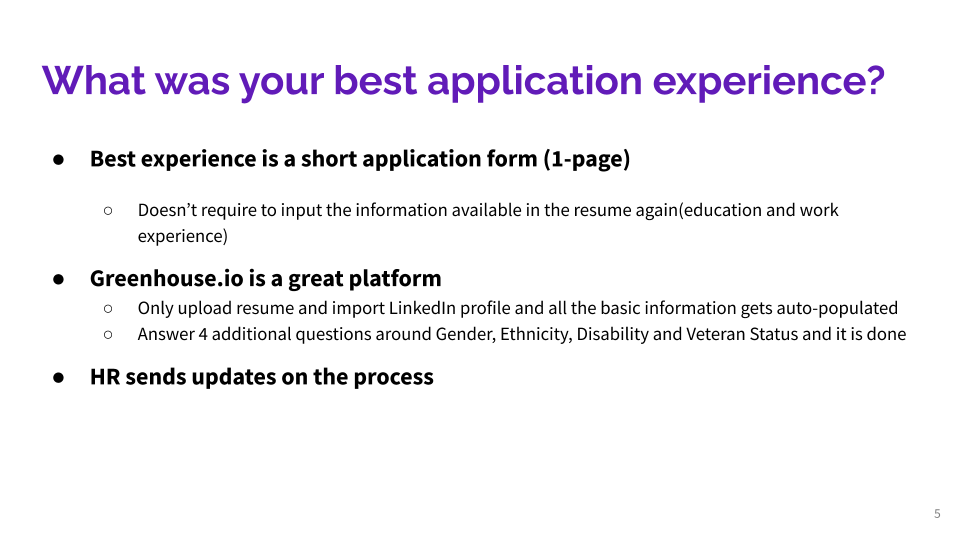
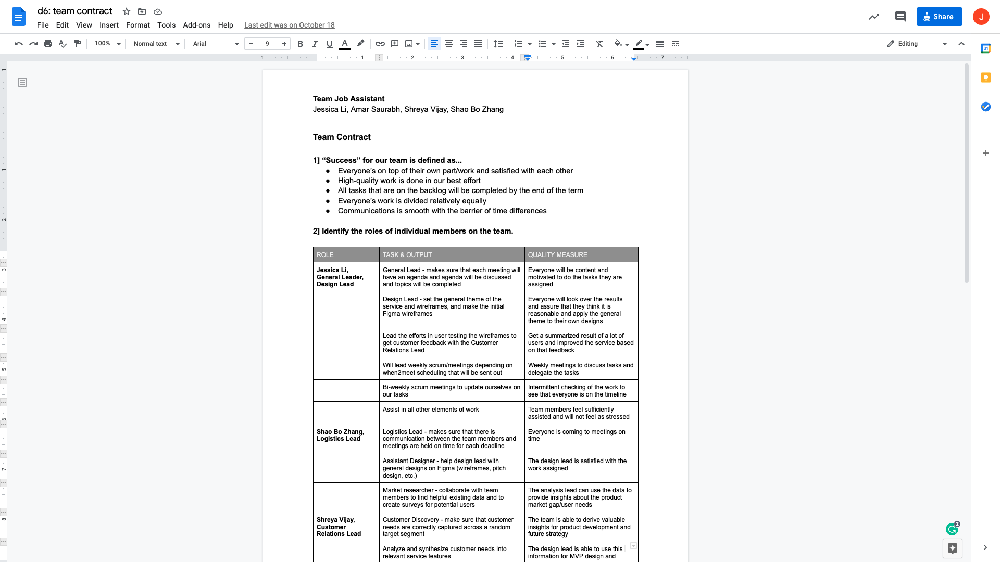

Deliverable 7 - Opportunity Framework

POG/SET
Now that we had a start, we looked into the factors that led to the job recruiting process to be so tedious. We used the Societal, Economic, and Technology factors to be a main driving force in this research. We looked into how each of these factors molded into the problem. Some main factors were ML for Technology, Coronavirus for Economic and more communication software, and less human interaction for Societal. From that, we found our Product Opportunity Gap (POG): There are a lot of young adults who find it (1) tedious and tiring to mass apply to places and (2) to reach out to recruiters.

Value Flow Diagram
After we had decided on the factors, we wanted to delve into the value flow diagram as it had let us start understanding and materialize the service that we would have provided. We started off knowing that the users were going to be students or young professionals. This would give us data and viewership as students and young adults are in the phase of their lives to start working. We would, in turn, have given them the service of helping them with their job applications. We would work with advertisers and give them the exposure they need, as they would pay us for our ad space. It was important to use to have a value flow diagram to be able to see the ecosystem that we would be creating with our service.
Other Research Elements...
We also did additional research to support our hypothesis of needing to better the job application process.


Deliverable 8 - Customer Insights

- 
Process + Takeaways
To make sure that our service would be necessary and so that our target audience would actually use the
product, we decided to do user interviews.
We asked eight people that we deemed as our main user base, students, about their opinions and their
experiences. We used directed storytelling to hear about their pain points and their
anecdotes from the job recruitment process.
Luckily, we found that the user testings supported our prior research and the user definitely would find a use
for the service based on their pain points.
I along with another teammate had predominantly done the slides because of time difference and flexibility reasons.
Fortunately, all teammates did their fair share of user testings.
Designing + Prototyping
When we were thinking about the pain points of the job process, we had to dematerialize the
idea
of the job process. We realized that applying to jobs has a lot of different components, such as emailing
recruiters, getting recruiter’s emails, messaging on LinkedIn, applying on different platforms, filling out the
applications, keeping track of applications. Once, we broke them down, we tried a couple of versions of
rebundling.
After the user interviews and research, we decided to create a chrome extension and platform to be able to have
mass-emailing to recruiter emails, a place to view the job application statuses and create a profile from a
resume on the platform. The pinning job applications and auto-fill
applications will be on the extension.
We all did our fair share in user interviewing, preparing the slides, and presenting the pitch in class and the business model slides.
Deliverable 9 - Initial Pitch
Pretotyping, Prototyping, Personas,
After understanding the features and which features we wanted, we had to pretotype the
idea.
This involved creating personas to add the face to the user and the stakeholders
involved.
We also added scenarios for storytelling. This along with more questions asked to other fellow users added
to
us finding out if this idea was worth pursuing, validating us.
Along with the actual service, part of the pretotyping of the idea was to make a business
model.
Since we knew from the user studies that students don't want to pay for the service, we went to
advertisers
to
be able to get ad revenue from an advertising network. Since we had a large audience, we hoped that
advertisers would be willing to work with us. For our prototype, we put all of the ideas together. We made
a
pitch to show the value and reasoning for our
service.
I had contributed to making the slides more cohesive with the story. I also made and presented the slides of the MVP product and the business model for this deliverable.
Deliverable 10 - Business Model + Additional Customer Research
For our business model, we had pivoted from just advertisers to including universities and
college clubs as customers. We knew that, with an additional two other interviews with club leaders, that
clubs get funding to help their students excel in professional ways. Additionally, with the additional four
extra user testings, it was a re-affirmation of the previous customer research that students don't want to pay
and they do find applying tedious and many of the users do mass apply.
My individual contribution was in creating the value propositions, and customer relationships in the business model canvas. Additionally,
I also had interviewed one of the club leaders for their point of view for paying for a service such as JobAssistant.
We took feedback that was given to us and incorporated them into our MVP concept video.
Deliverable 11 - Initial Concept Video
Validating, Pivoting + Pitching
For our final two deliverables, we had honed in the skill of validating our work, by looking through a lot of the previous feedback given by our Professor Skip Kelly, and making sure that the questions asked then would be predominantly answered.
We felt that answered a lot of loose ends would validate our work to understand the sphere that we were entering. We also included graphics of data to make sure that we were supported in quantifiable means as well in both the second and final presentations.
A big change that happened between the initial concept video, was the pivot in our MVP.
We had decided that we had too many features for our MVP and decided that it would be best to start off with the few key features to be feasible.
Therefore, instead of the list of features mentioned above, we had changed JobAssistant to just be a browser extension that would help auto-fill forms with various user-chosen-job-specific resumes and an automatic job tracker.
For pitching the idea, we all took part in narrating portions of the slides.
And for the Q&A, we all allocated sections of questions that we would answer from the investor, but if one of us had more knowledge of that subject they would answer it.
In terms of individual contributions to the team for the second pitch and the final presentation + Q&A, I would say this is when I was most involved.
I had scripted, voiced over, designed most of the concept videos, and edited them, additionally, I had invested time in making the slides more aesthetic so that they could look polished and clean for the investors in the final pitch.
I also made sure that morale was up in the pitches. In the Q&A sessions, I would also try to answer quickly if there was any dead space between the investor and the team as well. Luckily, that really was not a large issue.
Deliverable 12 - Pitch #2

Deliverable 13 - Final Presentation
Project Management
In general, our group stayed on schedule and we had followed the premortem for our critiques as well as
abided by the team contract.
I was the leader of the group, therefore I was responsible for most of the project management duties.
I made sure that every week that we would at least meet once, delegate the tasks, and converse about the service
to make sure we were on the same footing.
I would set the time, date, and the Zoom meeting, and try to make sure that we all could make the time.
Given the time differences between our teammates, some issues arose with that, but we worked
through them.
If there was any work that was not done or sufficient, I would either delegate it to someone else or I would do
the work to make sure that the quality of the project was up to par.
I would also check in with the rest of the team to see how they were doing and reviewing the work before I would
turn in the deliverable.
Premortem + Team Contract
Premortem
Team Contract
